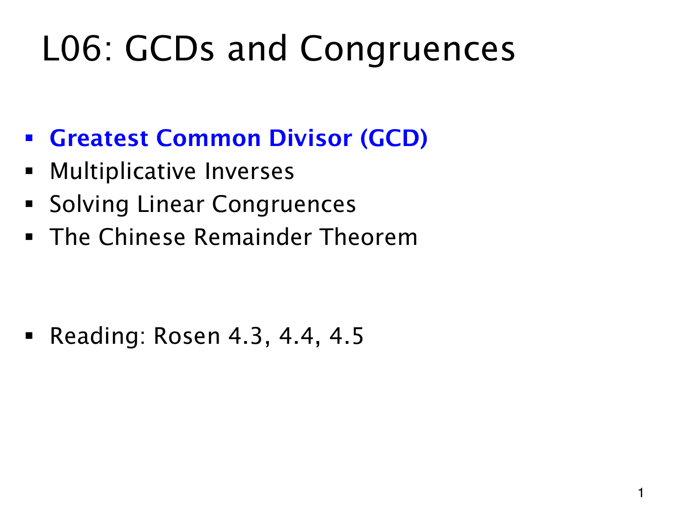

L1.13 · 第 1 页讲解原文
查看这一页课件

从共同因子到同余方程
上一章有些非零数仍不能在模运算中相除。要解释这种差别，先研究两个整数共享的因子，再研究乘法逆元。
目录中蓝色的 Greatest Common Divisor（最大公约数，GCD）是起点。它描述共同因子的结构；随后 Multiplicative Inverses 把“除以一个数”转为乘以它的逆元，Solving Linear Congruences 再用这些性质求未知数。
最后的 Chinese Remainder Theorem（中国剩余定理）处理一个整数同时满足多个余数条件的问题，还要看各个模数之间的关系。
这份课件原题为 L06: GCDs and Congruences，网站收录编号为 L1.13。Rosen 4.3、4.4、4.5 是所列阅读范围。这页给出学习次序，各定理的具体前提留在后文。